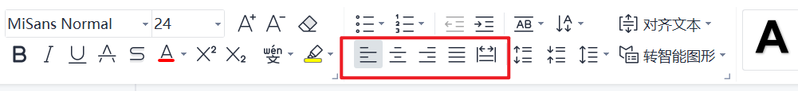

PPT文本中的段落——PPTInnerLine
有关 PPTText 、 PPTInnerLine、PPTInnerText的关系，请参考PPTText的文档
创建PPTInnerLine
您可以通过以下方式创建一个PPTInnerLine对象，两种方式没有任何差别：
PPTInnerLine pptInnerLine = new PPTInnerLine();
PPTInnerLine pptInnerLine = PPTInnerLine.build();
您还可以直接快速创建空行对象：
PPTInnerLine pptInnerLine = PPTInnerLine buildEmptyLine();
/**
* num：空几行
*/
PPTInnerLine pptInnerLine = PPTInnerLine buildEmptyLine(int num);
您还可以在创建的时候直接绑定PPTInnerText对象集合：
只有一个PPTInnerText时，可以使用以下方式创建 PPTInnerLine 对象，两种方式没有任何差别：
PPTInnerLine pptInnerLine = new PPTInnerLine(PPTInnerText text);
PPTInnerLine pptInnerLine = PPTInnerLine.build(PPTInnerText text);
有多个的时候，可以使用以下方式创建 PPTInnerLine 对象，两种方式没有任何差别：
PPTInnerLine pptInnerLine = new PPTInnerLine(List<PPTInnerText> textList);
PPTInnerLine pptInnerLine = PPTInnerLine.build(List<PPTInnerText> textList);
你还可以在创建的时候直接绑定样式文件：有任何差别：
PPTInnerLine pptInnerLine = new PPTInnerLine(PPTInnerText text, PPTInnerLineCss css);
PPTInnerLine pptInnerLine = PPTInnerLine.build(PPTInnerText text, PPTInnerLineCss css);
PPTInnerLine pptInnerLine = new PPTInnerLine(List<PPTInnerText> textList, PPTInnerLineCss css);
PPTInnerLine pptInnerLine = PPTInnerLine.build(List<PPTInnerText> textList, PPTInnerLineCss css);
添加段内文本
在结尾处追加一个段落：
PPTInnerLine add(PPTInnerText text)
在结尾处追加多个段落：
PPTInnerLine addAll(Collection<PPTInnerText> text)
您也可以直接取出段落List对象自行修改操作，支持get和set操作
@Setter
@Getter
private List<PPTInnerText> textList = Lists.newArrayList();
设定样式
您可以通过 css 属性来设置样式信息，接下来我们将详细讲解 PPTInnerLineCss 属性及含义。
@Getter
@Setter
private PPTInnerLineCss css;
PPTInnerLineCss
PPTInnerLine 对应的样式表对象
lineHeight
private double lineHeight;
行高，单位：倍行距，默认为1
align
private String align = PPTNameConstant.ALIGN_LEFT;
对齐方式，存在以下对齐方式
PPTNameConstant.ALIGN_LEFT左对齐PPTNameConstant.ALIGN_RIGHT右对齐PPTNameConstant.ALIGN_CENTER居中对齐PPTNameConstant.ALIGN_JUST两端对齐PPTNameConstant.ALIGN_DIST分散对齐
五种类型对应下图画圈的部分，图中从左到右顺序即为上方顺序

特别说明
实际上每一行都有一个end对象，用户可以get或者set：
private PPTInnerTextEnd end
它表示行尾信息，我们十分不推荐使用者自定设定有关参数，系统会自动添加行尾对象。
如果您不完全明白其中参数含义，请不要手动修改，如果认为当前有功能无法实现推荐提issues解决！